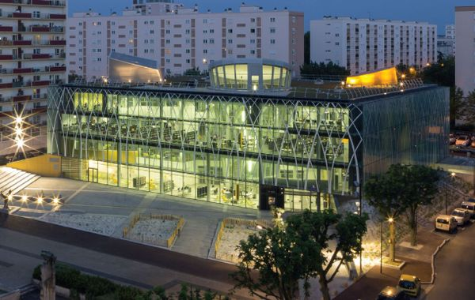
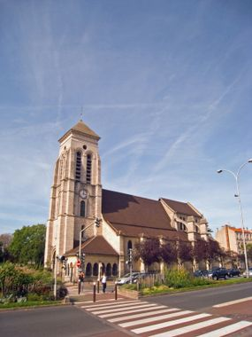
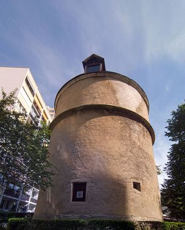

Accueil
Liste des points d'intérêts
Carte
Parcours
About
Accueil
Découvrir Créteil
Trouver un trajet
Carte interactive
Points d'intérêt
Liste des points d'intérêts

Médiathèque Nelson Mandela

Eglise saint christophe

Colombier
Carte interactive
Carte de Créteil :
Types de parcours
Retour
About